Introducing the Java I18n/L10n ToolKit II

[contents]
Java
Internationalization and Localization Issues
The Toolkit Project
Management Window
This document describes some issues in localizing and internationalizing
Java applications. It also introduces the features of Java I18n/L10n Toolkit
II and its interface, the project management window and how to use it.
Java
Internationalization and Localization Issues
The Java Internationalization/Localization ToolKit II (Java I18n/L10n
ToolKit 2.0) is a toolkit for rapid internationalizing and localizing Java
applications development.
Java's multi-platform compatibility makes it a natural choice for worldwide
software development. However, as with other software development, culture-specific
development issues still need to be addressed.
Although JDK 1.1 and Java 2 Platform include internationalization APIs
for developing global applications, there are still many time consuming
tasks in developing a Java application for global markets. The Java I18n/L10n
Toolkit makes internationalization and localization easier by helping with
some key processes:
-
Checking Java files for methods, classes, class constants, and strings
that are locale-specific
-
Checking for hard-coded or inconsistent message strings
-
Translating message strings and protecting strings that should not be translated
-
Generating new resource bundles
Running the Toolkit needs JDK 1.1.7 with Swing1.1 as its basic requirement.
Java 2 platform are highly recommended. It is available on Solaris, Windows
NT, and Windows 95 platforms. The Toolkit can be used in any locale, but
Translator contains only an English to Chinese dictionary by now. Of course
users can add their own dictionary to it.
The Toolkit has four independent tools which can be used separately.
They are:
-
I18n Verifier to test whether a program
is international or not and suggest corrections.
-
Message Tool to find and optionally correct
hard-coded or inconsistent messages.
-
Translator to translate messages in
a resource bundle file into the target locale language and protect strings
that should not be translated.
-
Resource Tool to merge more than
2 resource files to a new resource bundle or find the differences in the
resource files.
The Toolkit Project
Management Window
Due to the Java I18n/L10n Toolkit's unique functionality, there are
some special access and navigation methods used and described in the document.
However, unless otherwise noted, each toolkit user interface follows the
conventions of the software environment (Solaris or Windows) that it is
running on.
Release information and document for each tool can be accessed through
its help menu.
Getting Started
with the Toolkit
In the command line, change to the proper directory where the toolkit
is installed. Then type "jilkit" to get started with the Toolkit project
management window as shown in figure1.
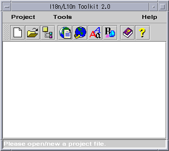
Figure1: Toolkit starts with the project management Window
Creating a new project
To create a new project file, you should assign the Project file
name, Project working directory and Project output directory
for it. If these directories are not assigned by you, the system default
directory is user current directory where you start the toolkit running.
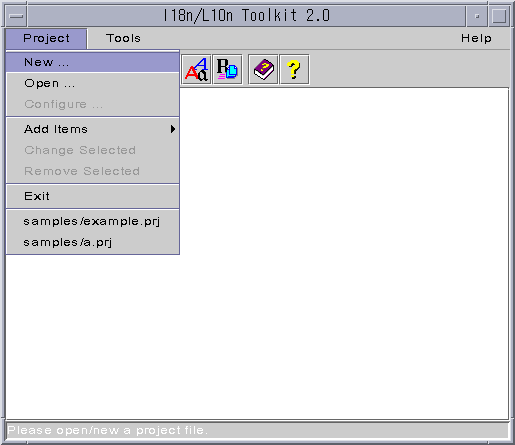
Figure2: Create new project
-
Press Project->New(figure2), a window is pop-up(figure3).
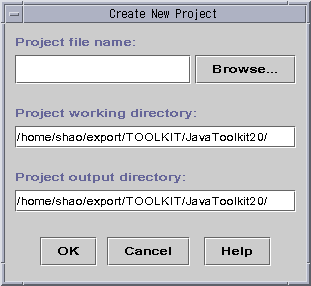
Figure3: Input new project file parameters
-
Type the project name in the Project file name text field. The suffix
of the project file should be "prj". If you input a file name which doesn't
have such suffix, the suffix will be automatically added to the end of
the file name.
-
Type the project working directory in the Project working directory
text field.
-
Type the project output directory in the Project output directory
text field. The project output dir is used as the default dir for exporting
resource bundles or saving file as another name.
-
Press OK to validate the set parameters or Cancel to invalidate
the set parameters.
Opening a project file
The following steps will introduce how to load project files. After
a project file is opened, you can use verifier, message tool and translator
to deal with it.
-
Select Project-> Open item (figure4).
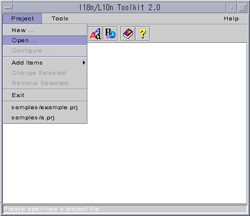
Figure4: Open a project file
-
Get the Open from a directory dialog window(figure5).
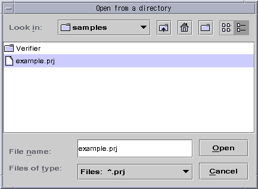
Figure5: Open from a directory
-
Select a project file from proper directory(figure4), then you will get
the window in which the project file(e.g.example.prj) is loaded. The project
file will be displayed in the window(figure6).
Every time, only one project can be loaded. There are files of different
levels in a project.
-
project file (root item)
-
source file (the level under project file)
-
resource bundle file (the level under source file)
-
locale resource bundle file (the level under resource bundle file)
Toolkit uses abstarct path names which are relative to the current working
directory to list the files in the
project management window.
The following will use the term "project item " to call
the source file and the resource bundle file.
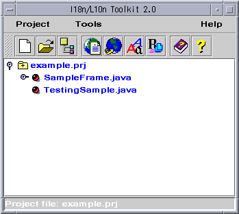
Figure6: A project file is opened
Changing selected item
-
Change source file item
-
Select the source file item you want to change.
-
Choose Project->Change Selected or the corresponding popup menu
item, you will see a customized dialog pop-up(figure 7).
-
Edit the source file name in the text field or Browse to select one name.
-
Press OK to validate the input value.
Figure7: Change source file item
-
Change resource bundle item
-
Select the resource bundle item you want to change.
-
Choose Project->Change Selected or the corresponding popup menu
item, you will see a customized dialog pop-up(figure 8).
-
Edit the resource bundle name in the text field or Browse to select one
name.
-
Press OK to validate the input value.
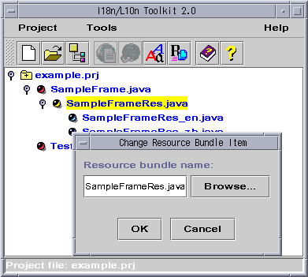
Figure8: Change resource bundle item
-
Change a locale resource bundle item
-
Select the locale resource bundle item you want to change.
-
Choose Project->Change Selected or the corresponding popup menuitem,
you will see a customized dialog pop-up(figure 9).
-
Select a locale name from the locale names list.
-
Press OK to validate the input value.
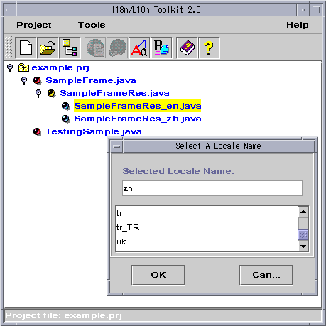
Figure9: Change locale resource bundle item
Configurating project file
To change the properties of the being opened project file,
-
Choose Project->Configure, a dialog box pop-up as shown in figure8.
-
Edit the project working directory and project output directory in the
text fields.
-
Press OK on the dialog box.
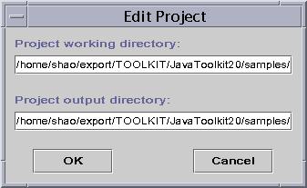
Figure10: Configure project file
Adding items to the
project file
-
Add a source file
-
Press Project->Add Items->Add Source(figure9), then get the dialog
box pop-up(figure10).
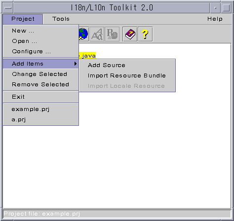
Figure11: Press add source
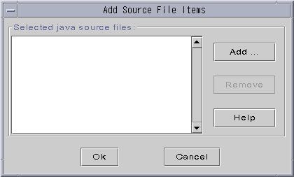
Figure12: Add source dialog
-
Press Add button to browse and select a java source file.
-
Continue to use Add button to add the java source files included
in the current project. All selected files will be shown in the list of
the dialog. Use Remove button to remove a file from the list.
-
Press OK to validate the input value.
-
Import resource bundle
-
Press Project->Add Items->Import Resource Bundle, get a dialog box
pop-up(figure13).
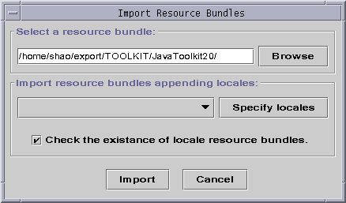
Figure13: Import resource bundle
-
Input resource bundle name in the text field or Browse to select
one name to the text field.
-
If there are locale resource bundles, they can be imported together. Press
Specify
locales to select the locale names.
-
Press OK to import selected resource bundles.
Note: In general cases, the source files are not internationalized,
they have no resource bundles of course. Then user will not need to do
this step. After processed by the Message Tool, the resource bundles will
be generated automatically.
-
Import locale resource bundles
-
Press Project->Add Items->Import Locale Resource, get a dialog box
pop-up(figure14).
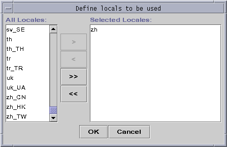
Figure14: Import locale resource
-
Select the locale names to be imported from the left list, then press ">"
to move the selections to the right list or press "<" to cancel the
selection. Press ">>" to select all and press "<<" to cancel all.
-
Press OK to import selected locale resource bundles.
Note: If the source file has not been internationalized, user will
not need to do this step.
Dealing
with the project item by different tools
If you want to deal with a project item (a source file or a resource
bundle file), you can select a tool from the image buttons in the Toolkit
main window or from the menu item: Tools (shown in figure15). You
can also select a tool from the popup menu list by pressing the right mouse
within the window(figure16).
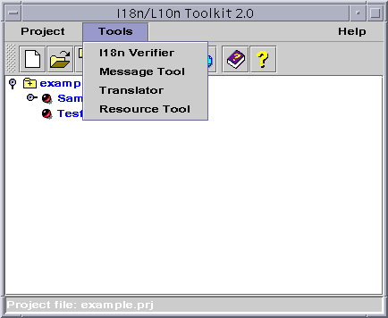
Figure15: Select a tool to deal with the project item
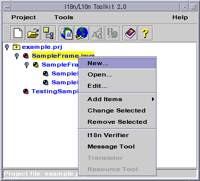
Figure16: Select a tool from the popup list
-
When you select a java source file, you can only deal with it by I18n/Verifier
and Message Tool. The other two tool menus and image buttons are
disabled in grey color as shown in figure15 and figure16.
-
When you select a resource bundle file, you can only deal with it by Translator
and Resource Tool as shown in figure17.
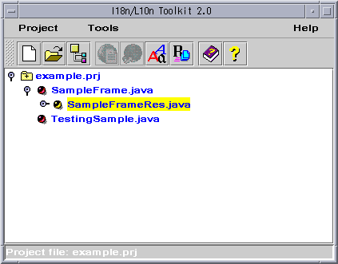
Figure17: Deal with resourcebundle
Some
Buttons on the main window
Under the menu items, there are some image buttons for quick access
some functions, you can press it to get the functions more quick and conveniently.
They are buttons for:
-
Create new project
-
Open project file
-
Edit project file
-
I18n Verifier
-
Message Tool
-
Translator
-
Resource Tool
-
Toolkit Help
-
About Toolkit
Project history
Under the popup menu of menu item Project as shown in figure18,
there is a list of latest opened project files. You can open the file you
have just used very conveniently there.
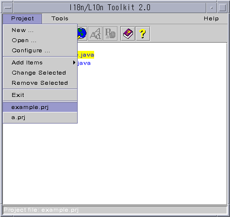
Figure18: opened project history
To manully add or remove project files in the history, just edit the ".toolkit/toolkit.INI"
at user home directory. In general, the history stores at most 10
project files that have been opened recently.
Exitting Toolkit
Press Project->Exit, if there is no other tool running, then
exit the Toolkit. Otherwize, it will get a dialog pop-up (figure
19).
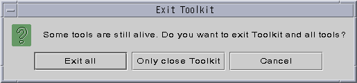
Figure19: Exitting Toolkit
-
Choose Exit all will exit the Project Management Window and other
running tools.
-
Choose Only close Toolkit will only close the Project Management
Window. Other running tools will still run. But once the Project Management
Window is closed, it can not be launched from other tools.
-
Choose Cancel will cancel this operation.
Top of file | Comments
| Submit Bug

Copyright © 1995-1999 Sun Microsystems, Inc.
China Technical Development Center
All Rights Reserved.